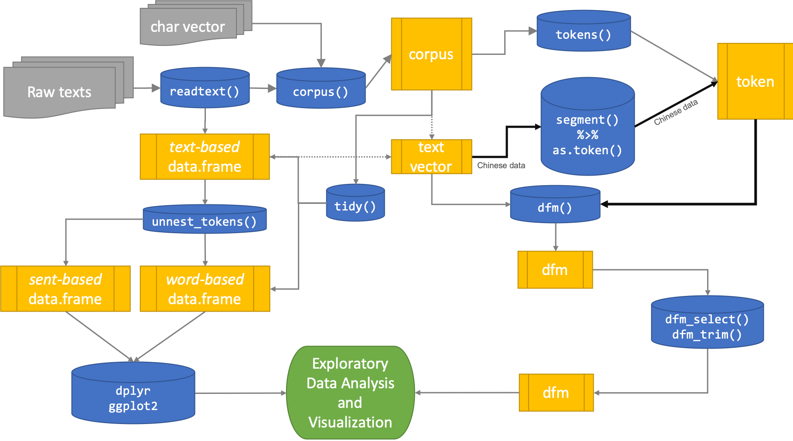
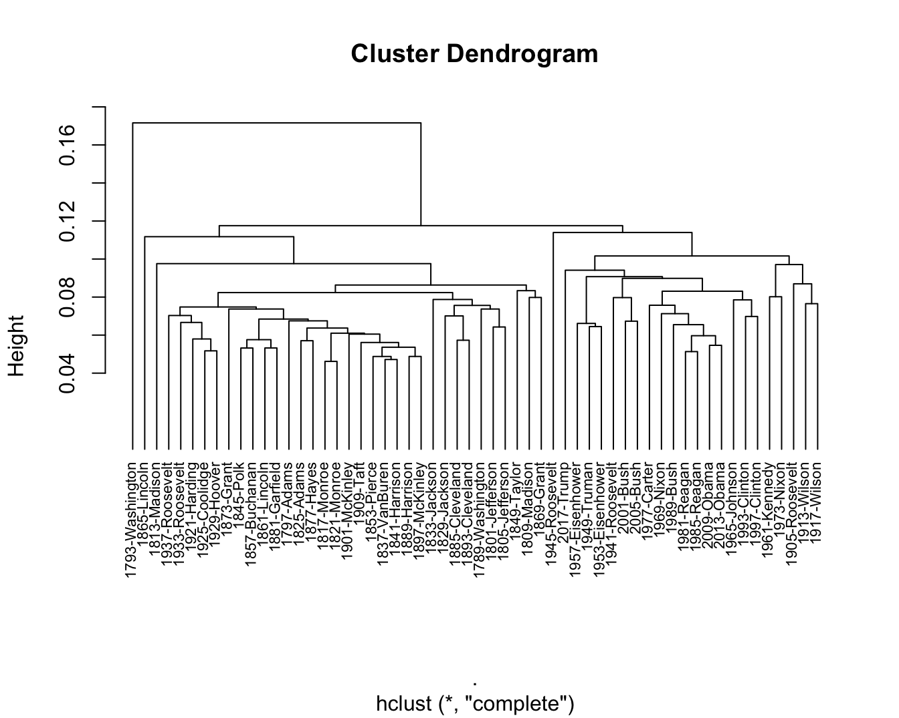
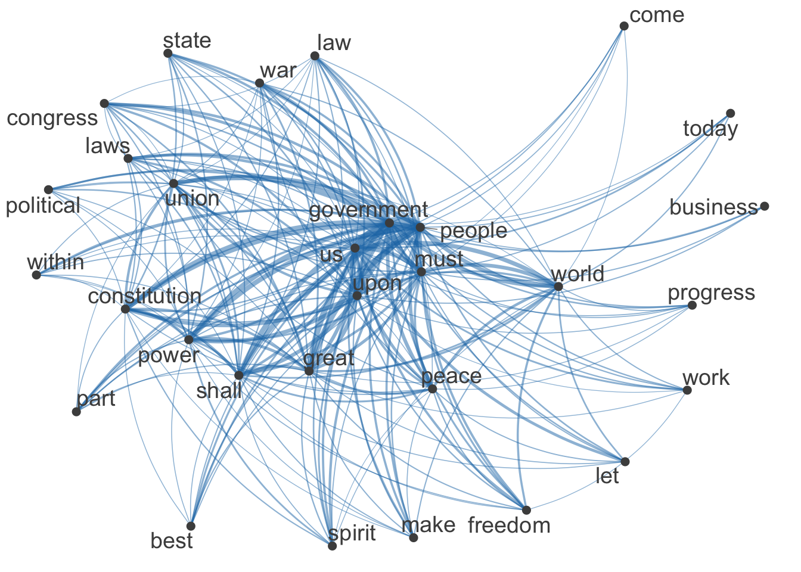

Chapter 13 Vector Space Representation
13.1 Data Processing Flowchart

13.2 Document-Feature Matrix (dfm)
Two ways to create Dcument-Feature-Matrix:
- create
dfmbased on ancorpusobject - create
dfmbased on antokenobject
For English data, quanteda can take care of the word tokenization fairly well so you can create dfm directly from corpus.
However, for Chinese data, it is suggested to create your own corpus token object first, and then feed it to dfm() to create dfm for your corpus.
In this section, we demonstrate the document-feature-matrix using the English data we discussed in Chapter 5, the data_corpus_inaugural preloaded in the library quanteda.
For English data, the process is simple: we first load the corpus and create a dfm object of the corpus using dfm().
Please note that the default data_corpus_inaugural preloaded with quanteda is a corpus object already.
## [1] "corpus"13.3 Defining Feature in dfm
What is dfm anyway? A document-feature-matrix is no different from a spead-sheet like table. In a dfm, each row refers to a document in the corpus, and the column refers to a linguistic unit that occurs in the document(s). If the linguistic unit you are interested in is a word, then this is a document-word-matrix, with the columns referring to all the words observed in the corpus, i.e., the vocabulary of the corpus. If the linguistic unit you are interested in is an n-gram, then this is a document-ngram-matrix, with the columns referring to all the n-grams observed in the corpus.
What about the cells? What values are usually stored in the matrix? The most intuitive values in the cells are the co-occurrence frequencies, i.e., the number of occurrences of the linguistic unit (i.e., column) in a particular document (i.e., row). For example, in the following example, we can see that in the first document, i.e., 1789-Washington, there are 2 occurrences of representatives, 48 occurrences of and
## Document-feature matrix of: 10 documents, 10 features (43.0% sparse) and 4 docvars.
## features
## docs fellow-citizens of the senate and house representatives :
## 1789-Washington 1 71 116 1 48 2 2 1
## 1793-Washington 0 11 13 0 2 0 0 1
## 1797-Adams 3 140 163 1 130 0 2 0
## 1801-Jefferson 2 104 130 0 81 0 0 1
## 1805-Jefferson 0 101 143 0 93 0 0 0
## 1809-Madison 1 69 104 0 43 0 0 0
## features
## docs among vicissitudes
## 1789-Washington 1 1
## 1793-Washington 0 0
## 1797-Adams 4 0
## 1801-Jefferson 1 0
## 1805-Jefferson 7 0
## 1809-Madison 0 0
## [ reached max_ndoc ... 4 more documents ]Distributional properties like co-occurrences are very important information in corpus linguistics. Most of the studies in corpus linguistics adopt an implicit distributional hypothesis, which can be illustrated by a few famous quotes:
You shall know a word by the comany it keeps. (Firth, 1957, p.11)
[D]ifference of meaning correlates with difference of distribution. (Harris, 1970, p.785)
The meaning of a [construction] in the network is represented by how it is linked to other words and how these are interlinked themselves (De Deyne et al. 2016)
So in our current context, the idea is that if two documents have similar sets of linguistic units popping up in them, they are more likely to be similar in meaning as well. The advantage of creating a document-feature-matrix is that now each document is not only a series of character strings, but also a list of numeric values (i.e., a row of co-occurring frequencies), which can be compared mathematically with other documents (i.e., other rows). This is essentially a vector computation (cf. Figure 13.1): the document in each row is represented as a vector of N dimensional space. The size of N depends on the number of linguistic units that are included in the analysis.
Figure 13.1: Example of Document-Feature Matrix
13.4 Feature Selection
A dfm may be as informative as we have expected. To better capture the documental semantic similarity, there are several important factors that need to be more carefully considered when creating a dfm:
- The granularity of the linguistic unit
- Stopwords
- The distributional cut-offs of the linguistic unit
13.4.1 Determining Linguistic Granularity
In our previous example, we include only words, i.e., unigrams, as our features in the dfm. We can in fact include linguistic units at multiple granularities:
- words
- (skipped) n-grams
- lemmas/stems
For example, if you want to include bigrams, not unigrams, as features in the dfm, you can do the following:
## Document-feature matrix of: 10 documents, 10 features (43.0% sparse) and 4 docvars.
## features
## docs fellow-citizens of the senate and house representatives :
## 1789-Washington 1 71 116 1 48 2 2 1
## 1793-Washington 0 11 13 0 2 0 0 1
## 1797-Adams 3 140 163 1 130 0 2 0
## 1801-Jefferson 2 104 130 0 81 0 0 1
## 1805-Jefferson 0 101 143 0 93 0 0 0
## 1809-Madison 1 69 104 0 43 0 0 0
## features
## docs among vicissitudes
## 1789-Washington 1 1
## 1793-Washington 0 0
## 1797-Adams 4 0
## 1801-Jefferson 1 0
## 1805-Jefferson 7 0
## 1809-Madison 0 0
## [ reached max_ndoc ... 4 more documents ]Or for English data, if you want to ignore the stem variations between words (i.e., house and houses may not be differ so much), you can do it this way:
## Document-feature matrix of: 10 documents, 10 features (38.0% sparse) and 4 docvars.
## features
## docs fellow-citizen of the senat and hous repres : among
## 1789-Washington 1 71 116 1 48 2 2 1 1
## 1793-Washington 0 11 13 0 2 0 0 1 0
## 1797-Adams 3 140 163 1 130 3 3 0 4
## 1801-Jefferson 2 104 130 0 81 0 1 1 1
## 1805-Jefferson 0 101 143 0 93 0 0 0 7
## 1809-Madison 1 69 104 0 43 0 1 0 0
## features
## docs vicissitud
## 1789-Washington 1
## 1793-Washington 0
## 1797-Adams 0
## 1801-Jefferson 0
## 1805-Jefferson 0
## 1809-Madison 1
## [ reached max_ndoc ... 4 more documents ]You need to decide which type of linguistic units is more relevant to your research question. In many text mining applications, people often make use of both unigrams and n-grams. However, there is no rule for how to do this.
corp_us, can you create a dfm, where the features are trigrams but all the words in the trigrams are word stems not the original surface word forms? (see below)
13.4.2 Stopwords
There are words that are not so informative in telling us the similarity and difference between the documents because they almost occur in every document of the corpus, but carray little (refential) semantic contents. These words are usually the function words, such as and, the, of. Also, there are tokens that usually carry limited semantic contents, such as numbers and punctuation. Therefore, it is not uncommon that analysts sometimes create a list of words to be removed from the dfm. These words are referred to as stopwords.
The library quanteda has determined a default English stopword list, i.e., stopwords("en"). When creating the dfm object, we can further specify a few parameters:
remove_punct: remove all punctuation tokensremove: remove all words specified in the character vector here
corp_us_dfm_stp <- corp_us %>% dfm(remove_punct = T, remove = stopwords("en"))
corp_us_dfm_stp[1:10, 1:10]## Document-feature matrix of: 10 documents, 10 features (60.0% sparse) and 4 docvars.
## features
## docs fellow-citizens senate house representatives among
## 1789-Washington 1 1 2 2 1
## 1793-Washington 0 0 0 0 0
## 1797-Adams 3 1 0 2 4
## 1801-Jefferson 2 0 0 0 1
## 1805-Jefferson 0 0 0 0 7
## 1809-Madison 1 0 0 0 0
## features
## docs vicissitudes incident life event filled
## 1789-Washington 1 1 1 2 1
## 1793-Washington 0 0 0 0 0
## 1797-Adams 0 0 2 0 0
## 1801-Jefferson 0 0 1 0 0
## 1805-Jefferson 0 0 2 0 0
## 1809-Madison 0 0 1 0 1
## [ reached max_ndoc ... 4 more documents ]We can see that the number of features drops significantly after we remove stopwords:
## [1] 9399## [1] 9399## [1] 5584## [1] 924813.4.3 Distributional Cut-offs for Features
Depending on the granularity of the linguistic units you consider, you may get a considerable number (e.g., thousands of ngrams) of features in your dfm matrix. Another criteria relating to the distinctiveness of the features are their distributional properties. These can be very complicated but here we simplify these distributional criteria into three types:
- Frequency
- To make sure that the feature is important, we probably need to set a cut-off minimum frequency for a feature. For example, if the word occurs only once in the corpus (i.e., hapax legomenon), these words can be highly idiosyncratic usage, which is of little help in capturing the cross-document similarity. But on the other hand, we can also control the maximum frequency of the feature. If the word occurrs in all documents, they won’t help much as well.
- Dispersion
- If a word is more widely dispersed across different documents, they may be more informative in telling us the semantics of a group of documents. However, if a word occurs only in one particular document, this centralized distribution of the word may indicate something else. Therefore, sometimes we can control the document frequency of the features (i.e., in how many different texts does the feature occur?)
- Other self-defined weights
- It is true that many other factors may have a great impact on the co-occurrence frequencies we discuss so far. For example, given a co-occurrence frequency n for a word w in a text d, the significance of this n may be connected to:
- the document size of d
- the total number of w
- Also sometimes the importance of features comes with the theoretical assumptions. For example, in modeling the semantics of the documents, it is probably intuitive to assume that content words should carry more semantic content than functional words. So in the
dfmwe can include only words belonging to the lexical categories, such as nouns and verbs.
- It is true that many other factors may have a great impact on the co-occurrence frequencies we discuss so far. For example, given a co-occurrence frequency n for a word w in a text d, the significance of this n may be connected to:
In the following demo, we adopt a few simple distrubtional criteria:
- we remove stopwords and punctuations
- we remove words whose freqency < 10, docfreq <= 3, docfreq = ndoc(CORPUS)
corp_us_dfm_trimmed <- corp_us %>%
dfm(remove = stopwords("en"), remove_punct = T) %>%
dfm_trim(min_termfreq = 10, termfreq_type = "count",
min_docfreq = 3, max_docfreq = ndoc(corp_us)-1,
docfreq_type = "count")
corp_us_dfm_trimmed[1:10, 1:10]## Document-feature matrix of: 10 documents, 10 features (52.0% sparse) and 4 docvars.
## features
## docs fellow-citizens senate house representatives among life event
## 1789-Washington 1 1 2 2 1 1 2
## 1793-Washington 0 0 0 0 0 0 0
## 1797-Adams 3 1 0 2 4 2 0
## 1801-Jefferson 2 0 0 0 1 1 0
## 1805-Jefferson 0 0 0 0 7 2 0
## 1809-Madison 1 0 0 0 0 1 0
## features
## docs greater order received
## 1789-Washington 1 2 1
## 1793-Washington 0 0 0
## 1797-Adams 0 4 0
## 1801-Jefferson 1 1 0
## 1805-Jefferson 0 3 0
## 1809-Madison 0 0 0
## [ reached max_ndoc ... 4 more documents ]13.5 Applying DFM
13.5.1 Wordcloud
With a dfm of a corpus, we can quickly explore the nature of this corpus by examining the top features of this corpus:
## people government us can upon must great
## 574 564 478 471 371 366 340
## may states shall
## 338 333 314Or we can visualize the distrubtion of these top features using the wordcloud:
13.5.2 Document Similarity
As shown in 13.1, with the N-dimensional vector representation of each document, we can easily compute the mathematical similarities between two documents. Based on the similarities, we can further examine how different documents may cluster together in terms of their lexical similarities.
corp_us_dist <- corp_us_dfm_trimmed %>% dfm_weight(scheme = "prop") %>% textstat_dist()
corp_us_hist <- corp_us_dist %>% as.dist %>% hclust
plot(corp_us_hist,hang = -1, cex = 0.7)
13.5.3 Feature Similarity
What if we transpose a document-feature matrix? A transposed dfm would be a feature-document matrix. This is an interesting structure because we then can do the same tricks with all the features in the corpus. More specifically, we get to see how features (i.e., words, n-grams etc) are connected, or to what extent words are similar.
# convert `dfm` to `fcm`
corp_us_fcm <- corp_us_dfm_trimmed %>% fcm
# select top 30 features
corp_us_topfeatures <- names(topfeatures(corp_us_fcm, 30))
# plot network
fcm_select(corp_us_fcm, pattern = corp_us_topfeatures) %>%
textplot_network(min_freq = 0.5)
The dfm or fcm come with many potentials. Please refer to the quanteda documentation for more applications.
Exercise 13.2 Please create a network of the top 30 bigrams based on the corpus corp_us. The criteria for bigrams selection are as follows:
- Include bigrams that consist of alphanumeric characters only (no punctuations)
- Include bigrams whose frequency >= 10 and docfreq >= 5 but <= half number of the corpus